What do you need help with?
Find clear, step-by-step help for the copier tasks people use most.
Training library
49 results
Make a basic copy Choose color, quantity, paper, and start a clean copy job.
- 1
Place originals face up in the document feeder, or face down on the glass.
- 2
Tap Copy on the Home screen.
- 3
Choose Auto Color, Full Color, or Black.
- 4
Enter the number of sets using the keypad.
- 5
Confirm Paper is set to Auto, then press Start.
For mixed-size originals, straighten the top-left edges before loading the feeder.
Quick Copy Screen Setting Video A guided tour of the most-used settings on the copier’s quick copy screen.
- 1
Open Copy from the Home screen and review the settings before starting.
- 2
Choose the color mode and confirm the correct paper tray or Auto Paper setting.
- 3
Keep Zoom at 100% for same-size output, or select the reduction or enlargement needed.
- 4
Set the original type, duplex, combine, and finishing choices for the job.
- 5
Enter the number of copies, review the screen one last time, and press Start.
Press Reset when you finish so the next person starts with the standard copy settings.
Copy two-sided Turn one- or two-sided originals into a two-sided set.
- 1
Load the originals and open Copy.
- 2
Tap Duplex/Combine (sometimes shown as 1-Sided > 1-Sided).
- 3
Choose 1 > 2 for single-sided originals or 2 > 2 for double-sided originals.
- 4
Select the binding direction if the backs appear upside down.
- 5
Press Start.
Use Left Bind for a book-style page turn and Top Bind for a calendar-style flip.
Staple and finish sets Sort, staple, punch, or fold from the finishing controls.
- 1
Open Copy and tap Finishing, or use the Staple shortcut when it appears.
- 2
Choose Sort for complete sets or Group to separate pages by original.
- 3
Select Corner Staple or 2-Position Staple.
- 4
Confirm the staple position in the preview.
- 5
Press Start.
Finishing choices only appear when that device has the matching finisher installed.
Combine pages on one sheet Place 2 or 4 original pages onto a single printed page.
- 1
Load the originals and open Copy.
- 2
Tap Duplex/Combine, then choose Combine.
- 3
Select 2 in 1 or 4 in 1.
- 4
Choose the page order and confirm the preview.
- 5
Press Start.
Combine plus two-sided printing can reduce a four-page handout to one sheet.
IMPORTANT: Paper Tray and Blue Sensors Position the blue paper guides correctly so the copier detects the loaded paper size.
- 1
Load the paper flat and square inside the tray.
- 2
Move the blue side and end guides so they sit snugly against the paper stack.
- 3
Do not leave a gap between the blue guides and the paper, and do not squeeze the paper until it bends.
- 4
Close the tray and check the paper size shown on the copier screen.
- 5
If the displayed size is wrong, reopen the tray and reposition the blue guides before continuing.
The blue guides act as paper-size sensors. Incorrect guide placement can cause the copier to select the wrong paper size or display a mismatch message.
Copy or print on 11 × 17 Use the correct tray and scaling for ledger-size pages.
- 1
Place 11 × 17 paper in a configured tray or the bypass tray.
- 2
Open Copy and tap Paper.
- 3
Select the tray showing 11 × 17.
- 4
Keep Zoom at 100% for same-size output, or choose Auto Zoom to fit a smaller original.
- 5
Press Start.
If the tray shows the wrong size, adjust the paper guides and confirm the size on screen.
Reduce or enlarge a copy (Zoom) Shrink or enlarge with a preset, type your own percentage, or use Minimal so edges don’t get cut off.
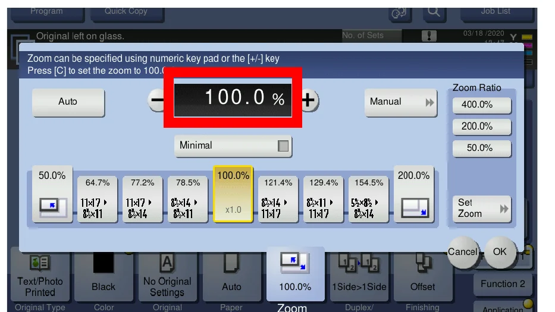
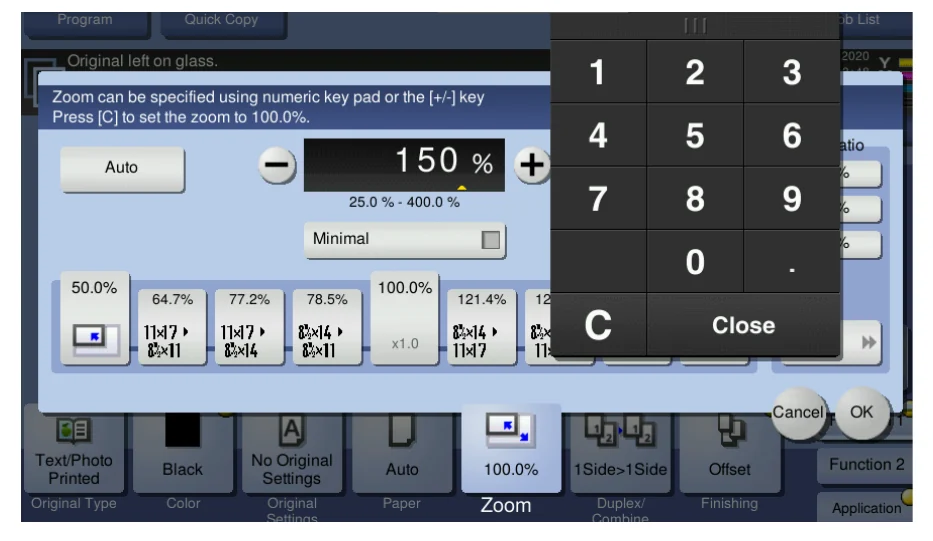
- 1
Load your originals and open Copy.
- 2
Tap Zoom. It shows 100.0% when copies will be the same size as the original.
- 3
Tap a preset size, such as 64.7%, 77.2%, 78.5%, 121.4%, 129.4%, or 154.5%, or a Zoom Ratio button: 50.0%, 200.0%, or 400.0%.
- 4
Need a different size? Tap the % box and type any percentage from 25.0% to 400.0% on the keypad, or use the – and + keys. Press C to go back to 100.0%.
- 5
If the edges of your original are getting cut off, tap Minimal. It shrinks the image about 3% and centers it on the page.
- 6
Tap OK, then press Start.
When you type your own percentage, check the Preview before you print so you don’t waste a stack of copies at the wrong size.
Make a booklet copy Put your pages in booklet order, with center staples on Letter, Legal, or Ledger paper if your copier has the finisher for it.
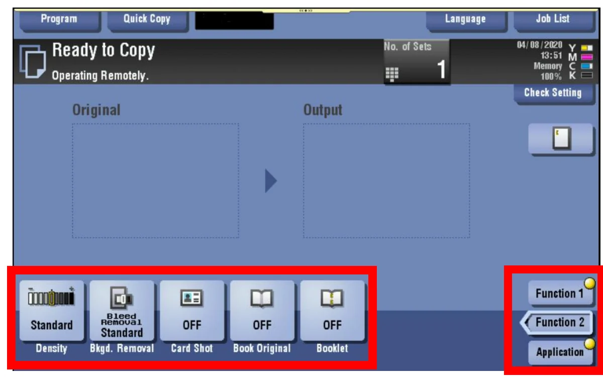
- 1
Load your originals and open Copy.
- 2
Tap Booklet on the bottom row of the copy screen. It shows OFF until you turn it on. On some screens, Booklet is under Function 2.
- 3
Turn Booklet on. The copier puts your pages in booklet order.
- 4
For a stapled booklet, turn on center stapling. It works on Letter, Legal, or Ledger booklets.
- 5
Check the other settings, like Color and No. of Sets.
- 6
Press Start.
Center stapling needs optional equipment (a finisher with a saddle stitcher). If you don’t see the option, your copier doesn’t have it.
Choose Original Type and special color modes Tell the copier what your original looks like (photo, map, copied paper, and more), and try 2 Color or Single Color.
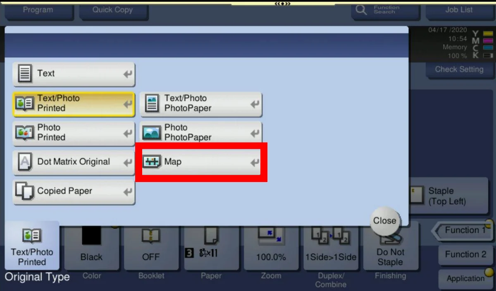
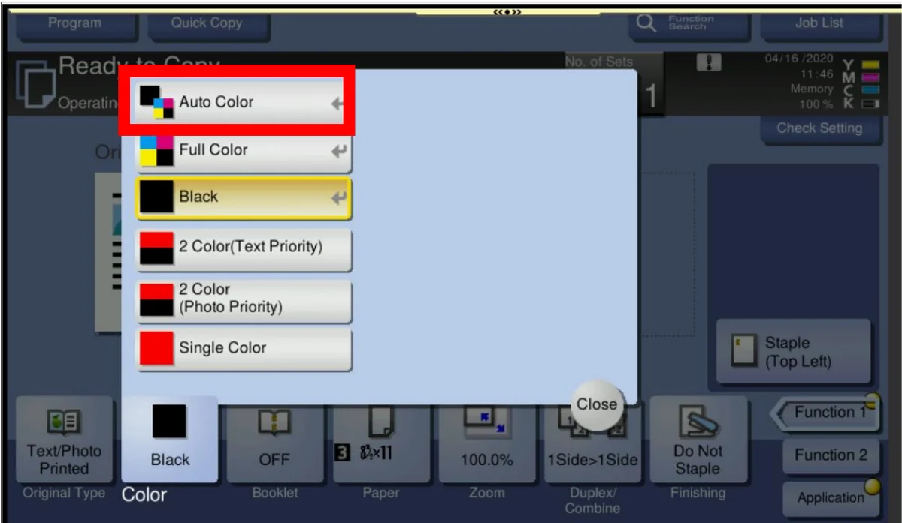
- 1
Load your original and open Copy.
- 2
Tap Original Type (first key on the bottom row). The usual setting is Text/Photo Printed.
- 3
Pick the choice that best matches your original: Text, Text/Photo Printed, Photo Printed, Text/Photo PhotoPaper, Photo PhotoPaper, Dot Matrix Original, Copied Paper, or Map. Tap Close.
- 4
For a special color effect, tap Color and choose 2 Color (Text Priority), 2 Color (Photo Priority), or Single Color. Tap Close.
- 5
Press Start.
You don’t have to change Original Type. Use it only when you want more refined output, like a photo, a map, or a copy of a copy. Many copiers are set to Black by default, so choose Auto Color when you want color copies.
Find more copy features (Function 2 and Application) Open the extra copy keys and the Application menu for features like Book Original, Card Shot, and Background Removal.

- 1
Open Copy. The row of keys along the bottom is Function 1, the default screen.
- 2
Tap Function 2 on the right for more keys, such as Density, Bkgd. Removal, Card Shot, Book Original, and Booklet.
- 3
Tap Application to see every extra copy feature, grouped into tabs like Basic, No. of Originals, Quality/Density, Edit Color, Layout, Tailoring, Stamp/Composition, and Other.
- 4
For example, No. of Originals has Original Settings, Book Original, Page Separation, Tab Original, Separate Scan, and Auto Rotate. Quality/Density has Bkgd. Removal and Text Enhancement.
- 5
Tap a feature, set it, and tap Close.
- 6
Press Start.
Application settings can also be saved as a Program (the Program key at the top of the copy screen), so you don’t have to set them up every time. Function 2 can be customized, so your copier may show more or different keys.
Scan to email Send a clean PDF directly from the copier.
- 1
Load originals and tap Scan/Fax on the Home screen.
- 2
Select a saved email address or tap Direct Input to type one.
- 3
Choose PDF as the file type and 300 dpi for most office documents.
- 4
Add a subject or file name if needed.
- 5
Press Start, then verify the scan arrives before leaving the device.
Use Compact PDF for a smaller attachment; use higher resolution for fine print or photos.
Scan to a USB drive Save a PDF to removable storage when email is not ideal.
- 1
Insert the USB drive into the device USB port.
- 2
Tap Save a document to External Memory when prompted.
- 3
Load originals and choose PDF and the desired resolution.
- 4
Name the file, then press Start.
- 5
Wait for completion and use the on-screen eject option before removing the drive.
USB access may be disabled by your organization’s security policy.
Use the address book Find saved email and fax destinations quickly.
- 1
Open Scan/Fax and tap Address Book.
- 2
Use Index, Favorites, or Search to locate the destination.
- 3
Tap the destination so a checkmark appears.
- 4
Add more recipients only when the document is appropriate for everyone selected.
- 5
Set the scan options and press Start.
Always review the selected recipients before sending sensitive information.
Add an Email Address to the MFP Register a frequently used email address directly from the copier screen.
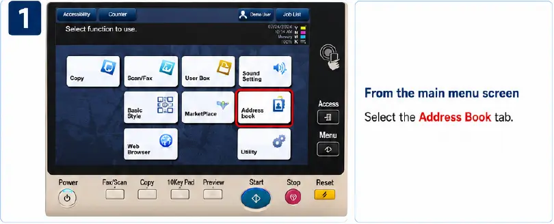
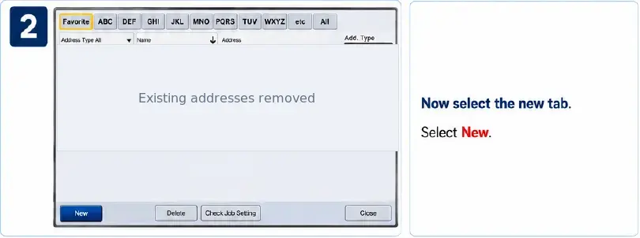
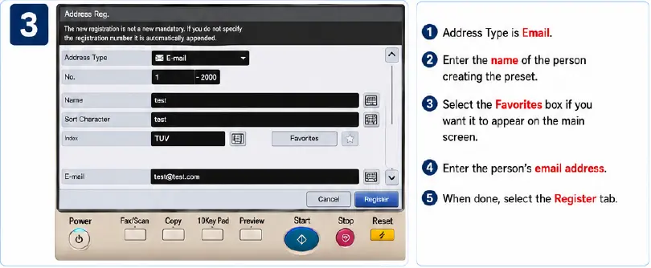
- 1
From the main menu screen, select Address Book.
- 2
Select New at the bottom of the address book screen.
- 3
Set Address Type to Email.
- 4
Enter the name of the person whose email preset you are creating.
- 5
Select Favorites if the address should appear on the main screen.
- 6
Enter the person’s full email address.
- 7
Select Register to save the new email preset.
Menu names vary by permissions; an administrator may need to register destinations.
Scan to a network folder Save a scan straight into a shared folder on your office network.
- 1
Place originals face up in the document feeder, or face down on the glass.
- 2
On the Home screen, tap Scan to PC. If your screen shows the classic menu, tap Scan/Fax instead.
- 3
Pick your saved folder from the address book. Most offices have these set up by an administrator.
- 4
No saved folder? Tap + (or Direct Input), choose SMB, then enter the Host Name, File Path, User Name, and Password your administrator gave you, and tap OK.
- 5
Check the File Type and Resolution, and change them if needed.
- 6
Press Start, then open the folder on your computer to confirm the file arrived.
The user name and password must belong to someone who has access to that folder. If scans suddenly stop arriving after a password change, ask your administrator to update the saved folder destination.
Choose scan settings Set resolution, file type, Compact PDF, and two-sided originals before you scan.
- 1
Load originals and open your scan screen (Scan to Email, Scan to PC, or Scan/Fax), then choose where to send it.
- 2
If your pages are printed on both sides, tap Simplex/Duplex and choose 2-Sided.
- 3
Tap Resolution: 200 × 200 dpi for everyday documents, 300 × 300 dpi for sharper text, and 400 or 600 dpi only for small print or photos.
- 4
Tap File Type and choose PDF for most documents, or Compact PDF when you need a smaller file for email.
- 5
For a multi-page document, keep Page Setting on Multi Page so all pages land in one file.
- 6
Press Start.
Higher resolution means a bigger file that takes longer to send. If an email is too big, try Compact PDF or a lower resolution. Button placement can look a little different depending on how your screen is set up.
Print from a USB drive Print a PDF or other file straight from a USB flash drive.
- 1
Plug your USB drive into the copier’s USB port. Wait until the copier has fully started first.
- 2
On the Home screen, tap USB Mem. Print. If you do not see it, tap the notification icon at the top of the screen and choose Print a document from External Memory.
- 3
Tap the file you want. Tap Open to look inside a folder.
- 4
Set No. of Sets, Color, Paper, Duplex Settings, and Staple/Punch if needed.
- 5
Press Start.
- 6
When printing is finished, remove the USB drive.
PDF, Compact PDF, JPEG, TIFF, XPS, and Word, Excel, or PowerPoint files (.docx, .xlsx, .pptx) can be printed. Your organization may have turned off USB printing for security.
Secure print with a password Hold a confidential job at the copier until you enter your ID and password.
- 1
In your program, click File > Print, choose the copier, then click Properties (or Preferences).
- 2
On the Basic tab, set Output Method to Secure Print.
- 3
Enter a Document ID and Password you will remember, click OK, then print.
- 4
At the copier, open User Box (it may be labeled Box, or be inside Classic Style), then tap System > Secure Print.
- 5
Enter the same Document ID and Password and tap OK. If a list of IDs appears, pick yours and then enter the password.
- 6
Select your document, tap Print, then press Start.
Unprinted secure jobs are deleted automatically after a set time (usually 1 day). If your office uses badge or login release instead, see “Release an ID & Print job.”
Two-sided, staple, or black and white from a Windows PC Change the most common print settings before you click Print.
- 1
In your program, click File > Print and make sure the copier is selected.
- 2
Click Properties (or Preferences) to open the copier’s settings.
- 3
Two-sided: on the Layout tab, set Print Type to 2-Sided. It is often already the default.
- 4
Staple: on the Finish tab, check Staple and choose the number and position of staples.
- 5
Black and white: on the Quality tab, set Select Color to Gray Scale.
- 6
Click OK, then click Print.
Staple only appears if the copier has a finisher. Most programs reset these settings when you close them. Tab names can look different if your office uses a different print driver.
Use and customize My Tab in the print driver Keep the settings you use most on one page of the print driver, and add, move, or remove them.
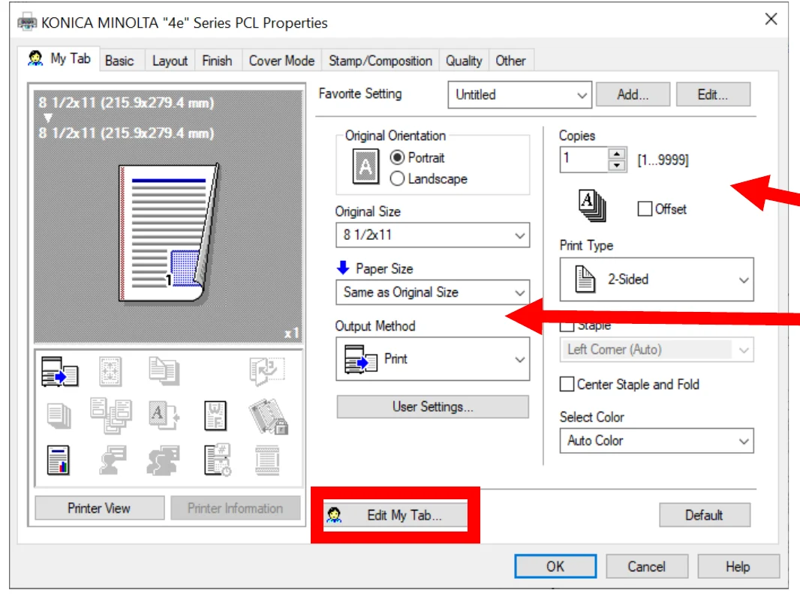
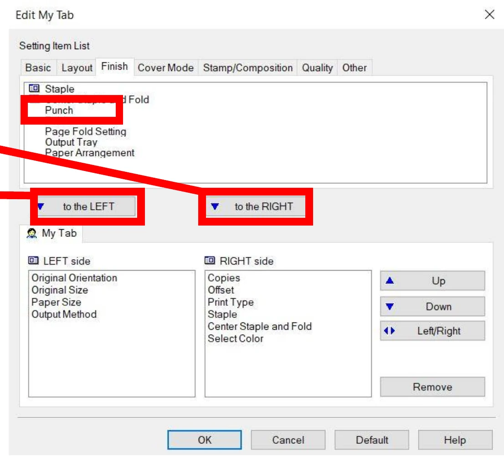
- 1
In your program, click File > Print, choose the copier, and click Properties. The driver opens on My Tab, which has Copies, Select Color, Print Type, Original Orientation, Paper Size, Paper Tray, Paper Type, Output Method, Staple, and Center Staple and Fold.
- 2
To change what’s on My Tab, click Edit My Tab… at the bottom of the window.
- 3
In Setting Item List, click the tab that has the feature you want (Basic, Layout, Finish, Cover Mode, Stamp/Composition, Quality, or Other).
- 4
Select the feature, then click to the LEFT or to the RIGHT to add it to that column of My Tab.
- 5
To tidy up, select an item in the My Tab list and use Up, Down, or Left/Right to move it, or Remove to take off items you don’t use.
- 6
Click OK. My Tab now shows your settings every time you print.
Staple and Center Staple and Fold only work if the copier has the matching finisher.
Save your print settings as a Favorite Save a group of driver settings with a name and a reminder note, then bring it back in one click.
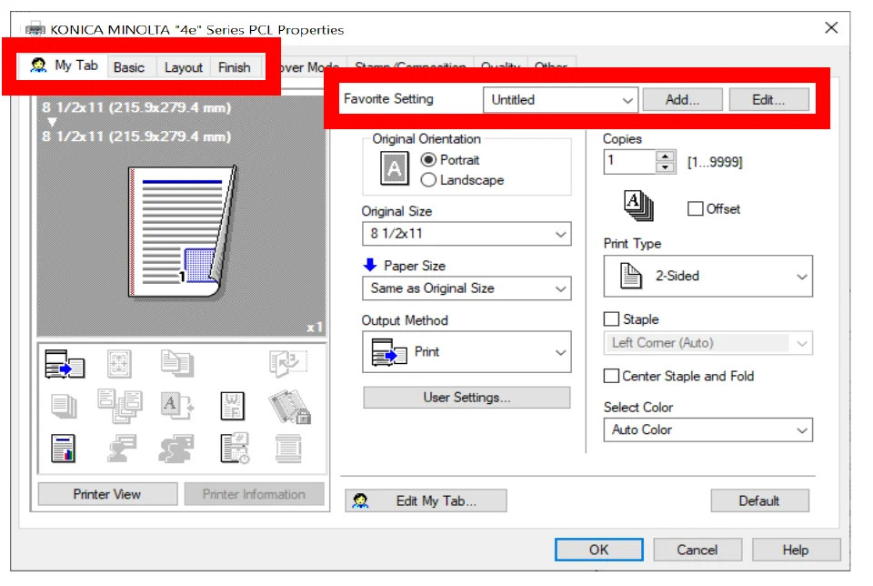
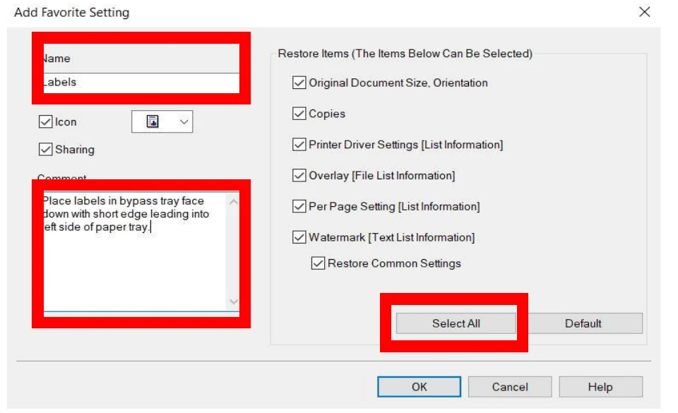
- 1
Click File > Print > Properties and choose all the settings you want to save, such as tray, paper type, and 2-sided.
- 2
Next to Favorite Setting at the top of the window, click Add….
- 3
Type a Name for the favorite, for example “Labels.”
- 4
Under Restore Items, click Select All so every setting is saved.
- 5
In Comment, type any reminder you want, then click OK.
- 6
Next time, click the down arrow next to Favorite Setting and choose your favorite. Its name and comments appear, and the settings are applied.
Use the comment for loading instructions, like the PDF’s example: “Place labels in bypass tray face down with short edge leading into left side of paper tray.” Then anyone who uses the favorite knows how to load the paper.
Add covers or insert different paper (Cover Mode) Add a front or back cover from another tray, or insert different paper on certain pages.
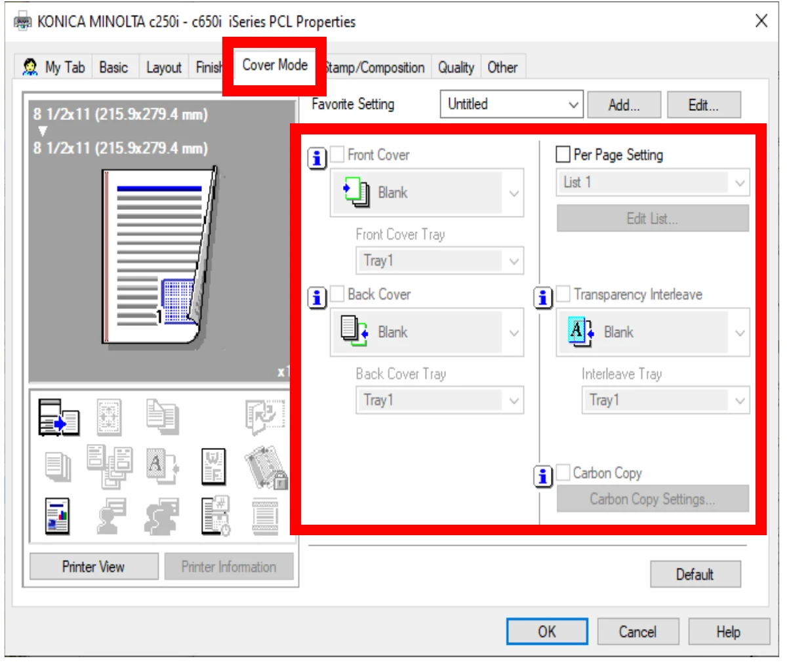
- 1
Click File > Print > Properties, then open the Cover Mode tab.
- 2
Check Front Cover to add a cover page at the beginning. Set Front Cover Tray to the tray number, or Bypass, that holds the cover paper.
- 3
Check Back Cover to add a page at the end, and set Back Cover Tray.
- 4
To use different paper or settings on certain pages (tabs, colored paper, 1-sided, stapling), check Per Page Setting and click Edit List….
- 5
Carbon Copy prints the same document again from several paper trays. Set it with Carbon Copy Settings….
- 6
Transparency Interleave puts a sheet of paper between printed transparencies. Choose the Interleave Tray.
- 7
Click OK, then Print.
Load the cover paper first and set its Paper Type so it feeds correctly (see “Match the paper type to the paper’s weight”).
Add a watermark, page numbers, date, or header/footer Stamp DRAFT or CONFIDENTIAL, make your own watermark, or add page numbers and dates from the print driver.
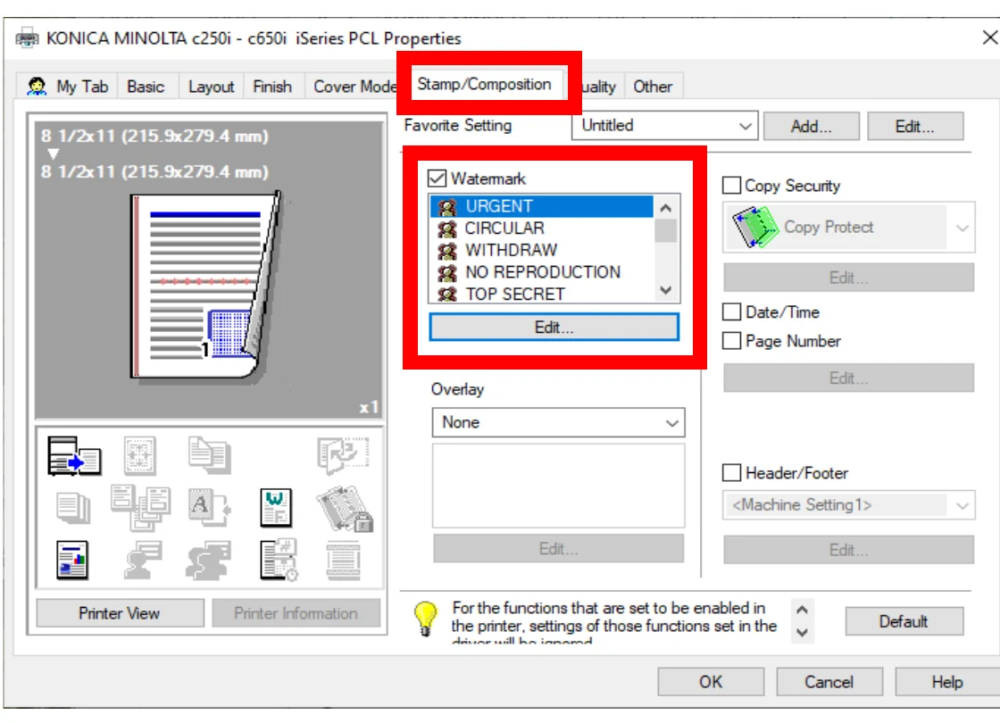
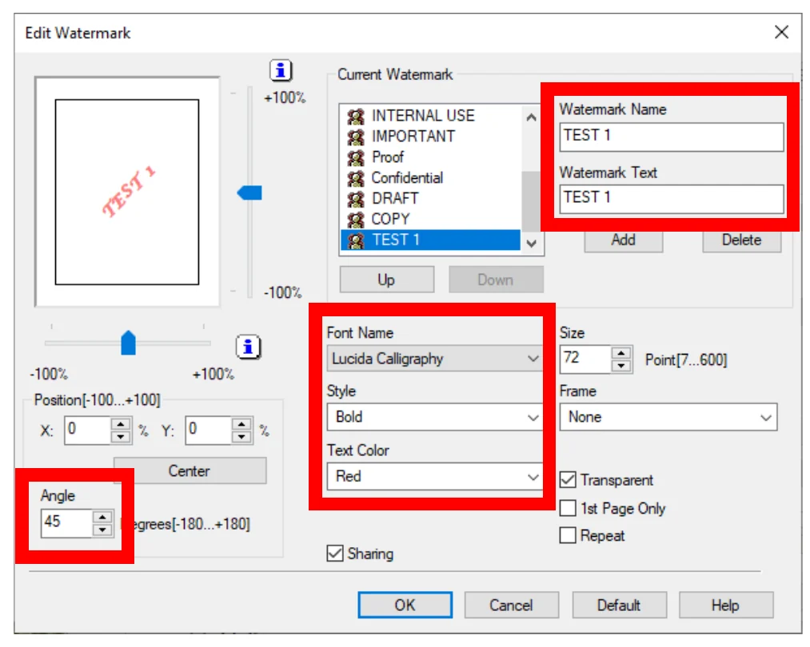
- 1
Click File > Print > Properties, then open the Stamp/Composition tab.
- 2
Check Watermark and pick one from the list, such as URGENT, CIRCULAR, WITHDRAW, NO REPRODUCTION, TOP SECRET, CONFIDENTIAL, or DRAFT.
- 3
To make your own, click Edit…, then Add. Type a Watermark Name and Watermark Text, set the Font Name, Size, Style, Text Color, and Angle, and click OK.
- 4
Check Page Number or Date/Time, and click Edit… under it to change how it looks.
- 5
Check Header/Footer to print header or footer information on each page.
- 6
Other options: Overlay prints a saved overlay on top of your document, and Copy Security prints a pattern that helps prevent copying.
- 7
Click OK, then Print.
In Edit Watermark, you can also choose Transparent, 1st Page Only, or Repeat.
Sharper prints or toner saving from a PC (Quality tab) Choose photo, document, or CAD quality, 1200 dpi, Toner Save, and other print-quality settings.
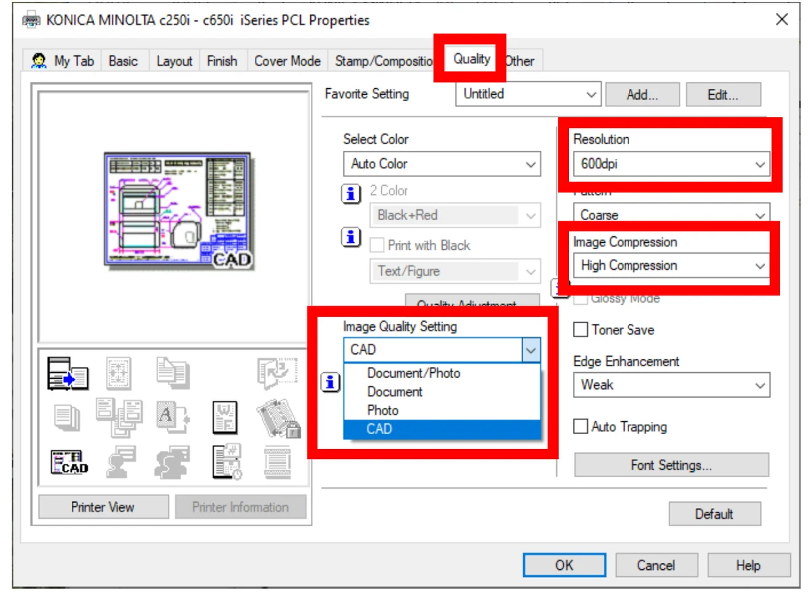
- 1
Click File > Print > Properties, then open the Quality tab.
- 2
Image Quality Setting: pick Document/Photo (the default), Document, Photo, or CAD.
- 3
Resolution: keep 600 dpi (the default), or choose 1200 dpi for the best quality.
- 4
Image Compression: High Compression (the default) prints faster. Best Quality takes a little longer to print.
- 5
Edge Enhancement makes the edges of text and lines stand out: Weak (the default), Medium, or Strong.
- 6
Other choices: Toner Save (lighter prints), Glossy Mode, 2 Color, Print with Black (with Gray Scale, keeps colored text from printing too faint), Quality Adjustment (brightness, saturation, contrast), Line Width Adjustment, and Auto Trapping.
- 7
Click OK, then Print.
Leave the defaults for everyday printing. Change them to match what you’re printing, like photos, CAD drawings, or fine lines.
Booklets, hole punch, folding, and page layout from a PC Print a booklet, punch holes, fold, put several pages on a sheet, or skip blank pages from the print driver.
- 1
Click File > Print > Properties.
- 2
Layout tab: set Print Type to Booklet, 2-Sided, or 1-Sided, and set Binding Position to Auto, Left Bind, Right Bind, or Top Bind.
- 3
To put several pages on one sheet (for example 2 in 1), or enlarge one page across several sheets to make a poster, check Combination and click Combination Details….
- 4
Other Layout options: Skip Blank Pages, Rotate 180, Chapters (type the pages that must start on the front of a sheet, for example 2,4,6-10), and Image Shift.
- 5
Finish tab: check Punch and choose 2-hole or 3-hole and the side; check Center Staple and Fold for booklets; or check Fold and choose Half-Fold or Tri-Fold.
- 6
If needed, choose the Output Tray and Page Arrangement (Prioritize Arranging Papers or Prioritize Productivity).
- 7
Click OK, then Print.
Punch, Fold, Center Staple and Fold, and Output Tray only work if the copier has the matching finisher.
Save a scan to a User Box Store a scanned document on the copier so you can print or send it later.
- 1
Place originals face up in the document feeder, or face down on the glass.
- 2
On the Home screen, tap Scan to Box. If your screen shows the classic menu, tap User Box instead.
- 3
Choose the box to save into. Public boxes are shared; Personal and Group boxes appear only when you are logged in.
- 4
On the classic menu, select the box and tap Save.
- 5
Check File Name, Simplex/Duplex, Resolution, and Color, and change them if needed.
- 6
Press Start.
Files left in a User Box can be deleted automatically after a set time (the factory setting is 1 day). Your administrator may have set this up differently, so print or send important files soon.
Print a file from a User Box Open a box on the copier and print a saved document.
- 1
On the Home screen, tap User Box (it may be labeled Box, or be inside Classic Style).
- 2
Choose Public, Personal, or Group, select your box, and tap Open.
- 3
If the box has a password, enter it and tap OK.
- 4
Select the file and tap Print.
- 5
Change print options if needed, and tap No. of Sets to enter the number of copies.
- 6
Press Start.
To print several files as one job, select up to 10 files and tap Other > Combine.
Delete old files from a User Box Clear out files you no longer need so the box does not fill up.
- 1
On the Home screen, tap User Box (it may be labeled Box, or be inside Classic Style).
- 2
Select your box and tap Open. Enter the box password if asked.
- 3
Select the file or files you want to remove. You can select more than one.
- 4
Tap Delete.
- 5
Check the file details on the confirmation screen, then tap Yes.
If the copier says a User Box is full or there is not enough storage, deleting old files frees up space. In shared Public boxes, only delete files you created or were asked to remove.
Send a print job from your PC to a User Box Store a document on the copier from your computer so you or others can print it again later.
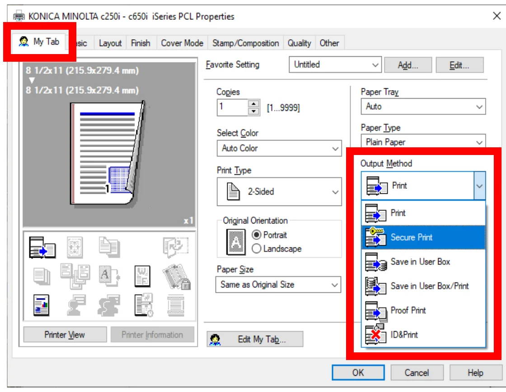
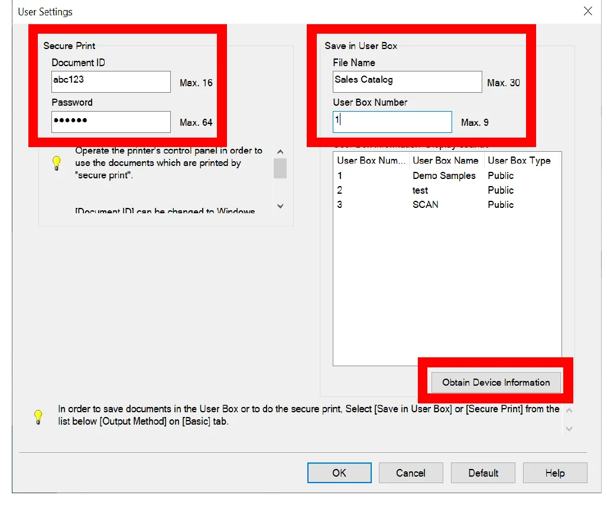
- 1
Click File > Print, choose the copier, and click Properties.
- 2
On My Tab (or the Basic tab), set Output Method to Save in User Box, or Save in User Box/Print to also print a copy now.
- 3
Click User Settings….
- 4
Under Save in User Box, type a File Name (up to 30 characters) and the User Box Number.
- 5
Don’t know the box number? Click Obtain Device Information to list the copier’s boxes with their number, name, and type, then choose one.
- 6
Click OK, then OK again, and print. To print it later, see “Print a file from a User Box.”
User Boxes are a good place for forms you reprint often. Your administrator can also set up confidential boxes.
Send a fax Dial, preview, and send from a fax-enabled device.
- 1
Load originals and open Scan/Fax.
- 2
Select a saved fax destination or tap Direct Input, then Fax.
- 3
Enter the full fax number, including any required outside-line prefix.
- 4
Review the destination and document settings.
- 5
Press Start and wait for the job to be accepted.
For a new number, send a cover sheet or test page first when possible.
Print a fax confirmation Check whether a fax sent successfully and keep a report.
- 1
Open Job List, then choose Log or Communication List.
- 2
Open the Send or Fax history.
- 3
Select the fax job and review the result: Complete, Failed, or Retry.
- 4
Use Details for the destination, time, and result code.
- 5
Print the communication report if a paper confirmation is required.
A completed transmission confirms delivery to the receiving fax system, not that a person read it.
Release an ID & Print job Securely print a held document at the device.
- 1
Sign in at the device using your organization’s normal method.
- 2
Tap ID & Print or Secure Print.
- 3
Select one or more jobs and review the document names.
- 4
Choose Print or Print & Delete.
- 5
Sign out before leaving the device.
Print & Delete removes the held copy after printing; confirm you will not need to release it again.
Find the meter count View total color and black-and-white impressions.
- 1
From the Home screen, tap Counter or Utility.
- 2
Open Meter Count or Check Details.
- 3
Record Total, Black, and Color counts requested by your service contact.
- 4
Use Print List if a paper record is required.
- 5
Return to the Home screen when finished.
Meter labels can differ by model; take a clear photo of the entire counter screen if unsure.
Log in and log out at the copier Sign in with your user name and password or your ID card, then sign out when done.
- 1
If a login screen appears, tap User Name and enter your user name, then tap Password and enter your password.
- 2
If you see Server Name or Operation Rights, leave the defaults (Operation Rights: User) unless told otherwise.
- 3
Tap Login. Your name appears on the screen while you are logged in.
- 4
Using a card? Place your ID card on the card reader instead. If asked, enter your password and tap Login.
- 5
When you are finished, tap Access to log out, then tap Yes.
- 6
If you walk away, the copier logs you out after a short time, but always log out yourself.
Login screens depend on how your administrator set up the copier. You may also see an account name screen or a Public User Access button.
Wake the copier from sleep mode Bring a dark or sleeping screen back to life.
- 1
A dark screen with a flashing blue light on the Power key means the copier is saving power (Low Power or Sleep mode).
- 2
Tap the touch screen to wake it.
- 3
Wait a few seconds. Waking from Sleep mode takes a little longer than Low Power mode.
- 4
If the Power key light is solid or flashing orange, press the Power key once to turn the copier back on.
- 5
Once the Home screen appears, continue your job.
Do not press the Power key or turn off the Main Power Switch while the copier is printing. This can cause a paper jam and delete waiting jobs.
Load paper in Trays 1–2 and the bypass tray Add paper the right way up and set the guides so the copier reads the size.
- 1
Pull out the tray. Do not touch the clear film inside.
- 2
Slide the paper guides to fit the size of paper you are loading.
- 3
Load the paper print side up, below the fill-line mark. (Letterhead goes print side down.) Flatten curled paper first.
- 4
Close the tray gently and check the paper size shown on the screen.
- 5
Bypass tray: open it (pull out the extension for large paper), load paper print side down all the way in, then slide the guide to fit.
- 6
If you loaded a different size or type, tap Paper on the Home screen, choose the tray, set Paper Size and Paper Type, then tap OK.
If the screen shows question marks or the wrong size, reopen the tray and reset the guides. See the “Paper Tray and Blue Sensors” video.
Load envelopes or labels in the bypass tray Feed envelopes and label sheets safely through the bypass tray.
- 1
Flatten envelopes to remove air, and press firmly along the flap fold.
- 2
Open the bypass tray. Load envelopes flap side up (up to 10), or label sheets print side down (up to 20).
- 3
Push them in until the edges touch the back, then slide the guide to fit.
- 4
When the screen asks, choose the paper type and size. Or tap Paper on the Home screen and select the bypass tray.
- 5
For envelopes, choose the matching envelope size. For labels, choose paper type Thick 1+.
- 6
Copy or print, making sure the job uses the bypass tray.
Do not use envelopes with glue or peel-off strips on the flap. They can damage the copier. The flap side cannot be printed on, and do not add extra envelopes while it is printing.
Match the paper type to the paper’s weight Read the g/m² on the ream label and pick the matching Paper Type so card stock and heavy paper feed and print correctly.
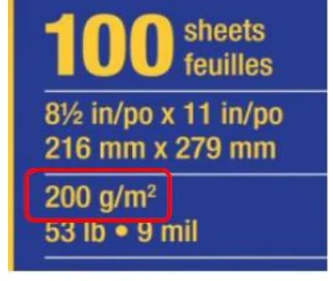
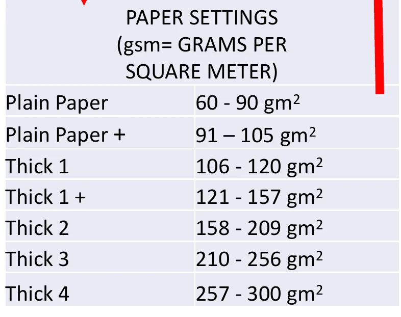
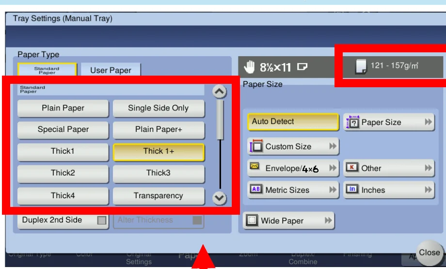
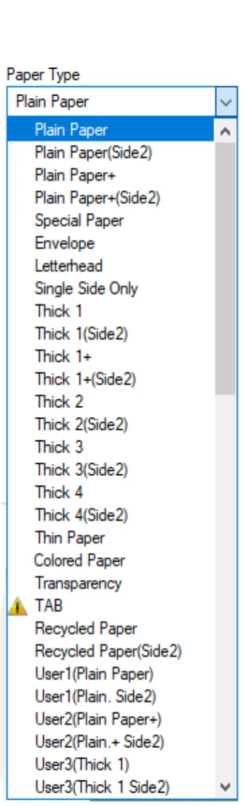
- 1
Find the weight on the ream label, in g/m² (grams per square meter). For example, 65 lb Cover is 176 g/m².
- 2
Find the matching Paper Type: Plain Paper 60–90, Plain Paper+ 91–105, Thick 1 106–120, Thick 1+ 121–157, Thick 2 158–209, Thick 3 210–256, Thick 4 257–300 g/m².
- 3
At the copier: open Copy, tap Paper, select the tray you loaded, and tap Change Tray Setting.
- 4
Under Paper Type, choose the type from the chart (176 g/m² and 200 g/m² are both Thick 2), then tap OK.
- 5
Printing from a PC: in the print driver, set Paper Tray to the tray you loaded and Paper Type to the same type, for example Thick 2.
- 6
Make your copy or print as usual.
Auto paper select is fine for everyday paper. Only choose a tray and paper type when you load something special. The driver’s Paper Type list also has Letterhead, Colored Paper, Recycled Paper, Envelope, and more.
IMPORTANT: Load the large-capacity tray (LCT) without touching the orange guide If paper touches the orange guide in the LCT, the copier shows an error or fault code.
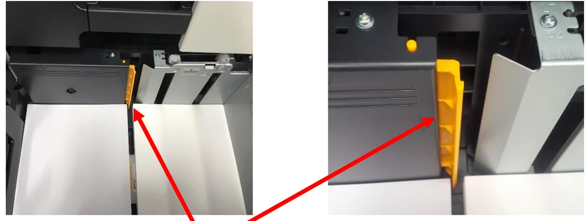
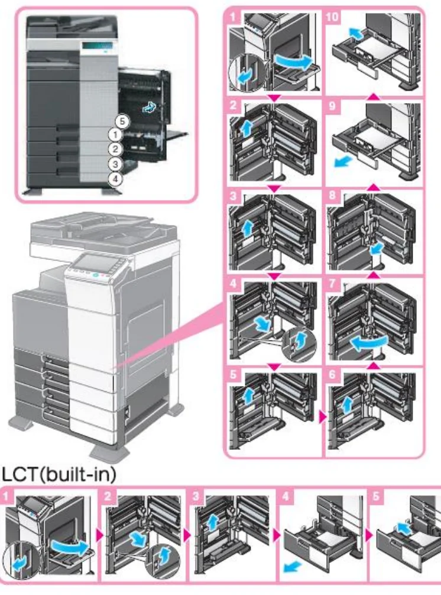
- 1
Pull out the LCT. On copiers that have one, it is usually Tray 3.
- 2
Find the orange guide inside the tray (see the picture).
- 3
Load the paper flat so the stack sits next to the orange guide without touching it.
- 4
If the tray holds two stacks, as in the picture, check that neither stack leans on or pushes the orange guide.
- 5
Close the tray gently. If paper jams in the LCT later, tap Start Guidance and follow the LCT (built-in) pictures on the screen.
Paper must NOT interfere with, touch, or push on the ORANGE guide. If it does, you’ll get an error code or fault code.
Replace a toner cartridge Swap in a new cartridge when the screen tells you it is time.
- 1
Wait for the message telling you to replace toner. Only replace the color shown. Tap Start Guidance to see an animation.
- 2
Open the front door of the copier.
- 3
Pull out the cartridge for the color shown.
- 4
Shake the new cartridge well, about 5 to 10 times.
- 5
Slide the new cartridge into the slot with the matching color label until it stops.
- 6
Close the front door and check that the message clears.
Never open or force a toner cartridge. Keep toner away from children and open flames. If toner gets on your skin, wash with soap and water. Handle the old cartridge the way your service agreement says.
Replace the waste toner box Put in a new waste toner box when the copier says the old one is full.
- 1
When the screen says the waste toner box needs replacing, tap Start Guidance and follow the pictures.
- 2
Open the front door of the copier.
- 3
Press the two blue release buttons and pull out the used waste toner box.
- 4
Put the used box in a plastic bag and store it in a box by itself.
- 5
Take the new waste toner box out of its packaging and slide it in all the way.
- 6
Close the front door and check that the message clears.
Your service provider collects used waste toner boxes. Do not open one or throw it in a fire. On some service contracts, your service provider replaces this part instead.
Replace a staple cartridge Load new staples when the copier says it’s out. The steps depend on which finisher you have.
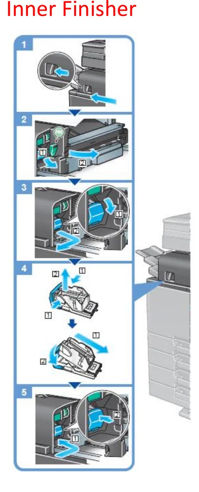
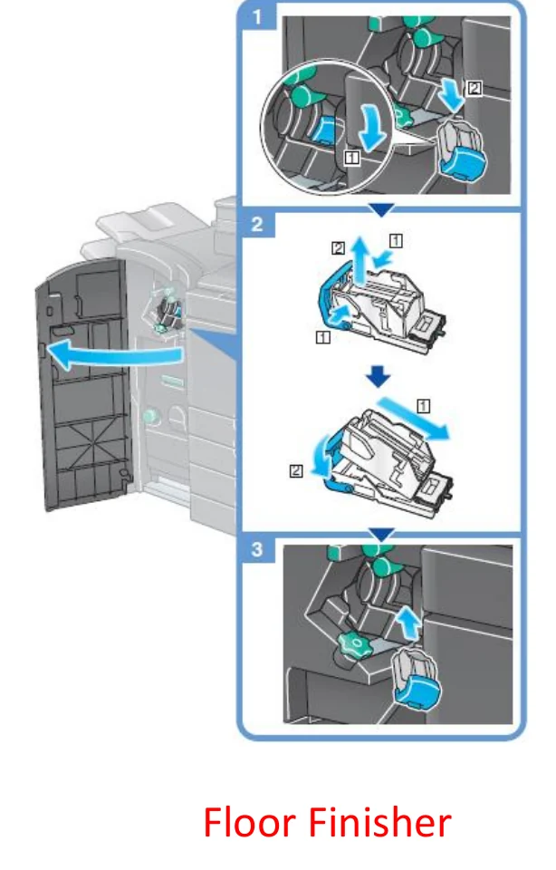
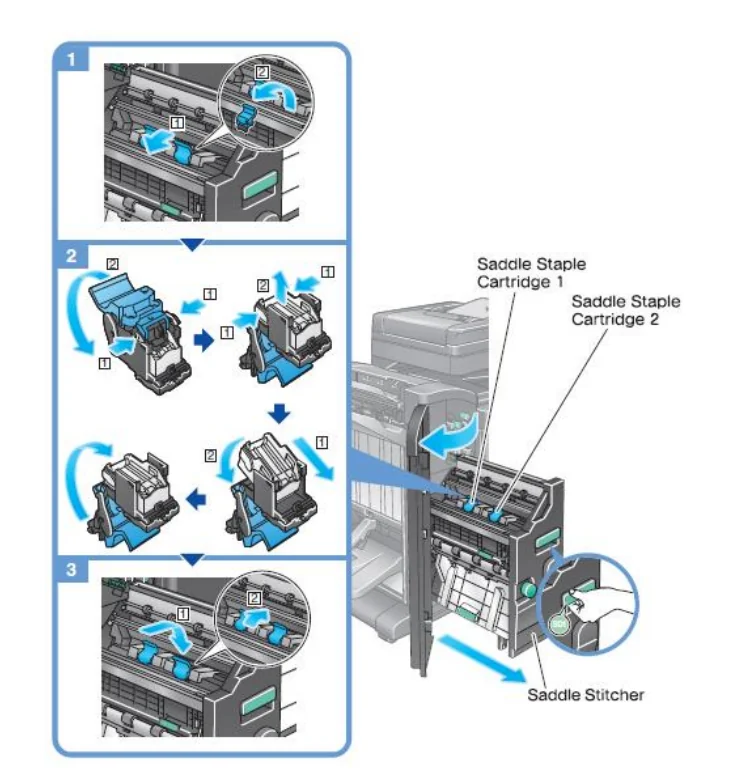
- 1
Wait for the screen to tell you to replace the staples, and follow the pictures it shows for your finisher.
- 2
Open the finisher. Inner finisher: slide it out as shown in picture 1. Floor finisher: open the front door.
- 3
Pull out the blue staple cartridge holder.
- 4
Squeeze the sides of the empty staple case, lift it out, and snap the new staple case into the holder.
- 5
Push the holder back in until it seats, then close the finisher or front door.
- 6
Booklet (saddle) staples: pull out the Saddle Stitcher by its green handle and replace Saddle Staple Cartridge 1 or 2 the same way.
Instructions vary by finisher model and options. Follow the pictures on your copier’s screen.
Empty the hole punch scrap box Empty the paper punchings when the copier says the punch box is full.
- 1
Wait for the screen to tell you to empty the hole punch box.
- 2
Floor finisher: open the front door. Inner finisher: slide the finisher out and open it as shown in pictures 1 and 2.
- 3
Pull out the punch scrap box.
- 4
Empty the punchings into a trash can.
- 5
Slide the empty box back in all the way.
- 6
Close the door, or push the inner finisher back into place.
Instructions vary by finisher model and options. Follow the pictures for your finisher.
Clear a paper jam safely Follow the animated guide and avoid torn paper inside the device.
- 1
Read the screen to identify the highlighted door or tray.
- 2
Open only the areas shown in the animated guide.
- 3
Turn green knobs and move green levers in the indicated direction.
- 4
Pull paper slowly with both hands and remove every torn piece.
- 5
Close each door firmly and confirm the message clears.
Do not touch labeled hot areas in the fusing section. Call support if paper tears where you cannot safely reach it.
Clear a document feeder jam and reload your originals Remove a jammed or double-fed original from the top feeder, then reload only the pages the screen asks for.
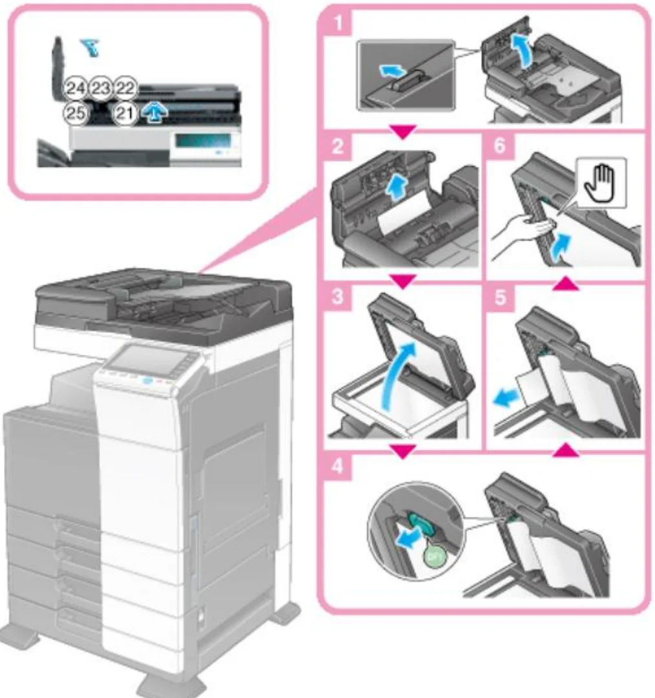
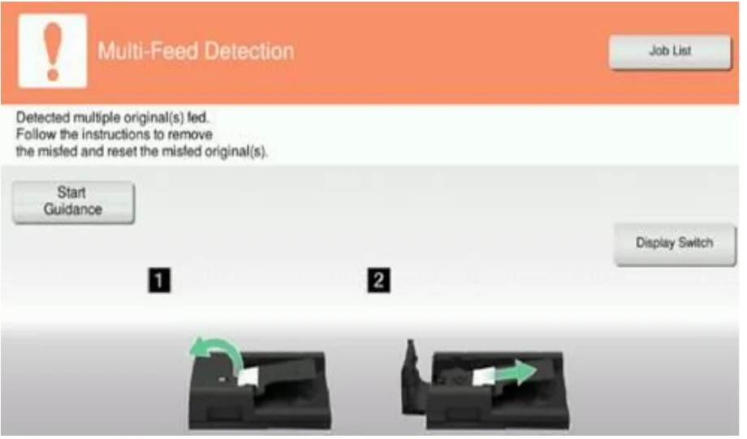
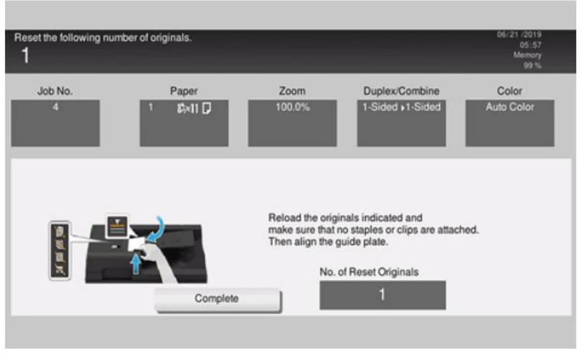
- 1
If the screen shows a document feeder jam or Multi-Feed Detection (more than one original fed at once), tap Start Guidance and follow the animated pictures.
- 2
Open the document feeder’s top cover as the pictures show, and gently remove the stuck original.
- 3
If the pictures show it, lift the feeder and turn the green knob to feed out the paper.
- 4
Close everything the guide had you open.
- 5
The screen now says “Reset the following number of originals” and shows how many. Reload those originals with no staples or clips attached, then align the guide plate.
- 6
Tap Complete. The copier picks up the job where it left off.
Access points are shown in light grey. Anything green is safe to touch.
Fix a paper-size mismatch Resolve prompts when the device expects a different paper size or type.
- 1
Check the size and type requested in the on-screen message.
- 2
Confirm the paper in the selected tray matches that request.
- 3
Move the tray guides snugly against the paper.
- 4
Confirm the paper size and type on screen after closing the tray.
- 5
If appropriate, select a different tray and continue the job.
Heavy, label, transparency, and letterhead settings affect temperature and speed—do not label them as Plain paper.
Common screen messages and what to do Quick fixes for toner, paper, and door messages on the copier screen.
- 1
“Toner is low. Replace when indicated.” Nothing to do yet. Just make sure a spare cartridge is ready.
- 2
“The Toner Cartridge needs to be replaced” or “Toner is depleted.” Replace the color shown (see “Replace a toner cartridge”).
- 3
“Replenish Paper.” or “Load paper into the Bypass Tray.” Add paper of the size shown to the tray shown.
- 4
“The part indicated … is open.” Firmly close the door or cover highlighted on the screen, including any finisher door.
- 5
“Paper of matching size is not available.” Load the right paper, or choose a different paper size or tray.
- 6
“Original left on glass.” Lift the cover and remove your original.
- 7
If a message keeps coming back after you fix it, contact your service provider.
Exact wording can vary a little by model and software version. If a color toner runs out, you can usually keep printing in black by tapping Continue.
Scan to email didn’t arrive Find a missing scan: check spam, the address, and the file size.
- 1
Check your spam or junk folder, and search your inbox for the copier’s sender name.
- 2
At the copier, tap Job List, then Log. Find your scan and tap Details to see whether it finished and where it went.
- 3
Check that the email address is spelled correctly. If you typed it in, try picking it from the address book instead.
- 4
If the scan had many pages, color, or high resolution, scan it again using Compact PDF or a lower resolution.
- 5
If your copier shows Scan to Me after you log in, send a test to yourself.
- 6
Still missing? Give your IT contact the time of the scan and any error shown in the Log.
Your email system may limit attachment size. Your administrator may have set the copier to split large emails or send a download link instead.
No exact match yet
Try a shorter phrase such as “scan,” “staple,” “fax,” or “paper.”
When the screen shows an error, follow the picture first.
Use the device’s animated guide, touch only green levers and knobs, and stop if something does not move easily.